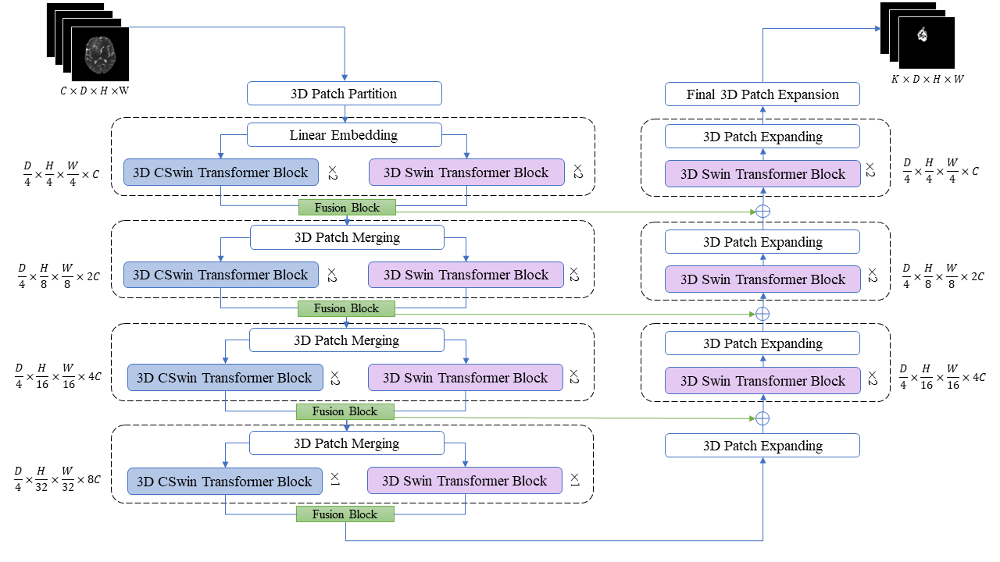
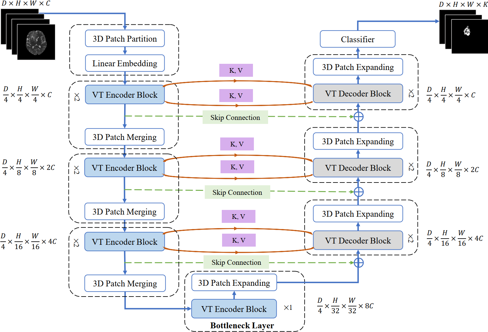
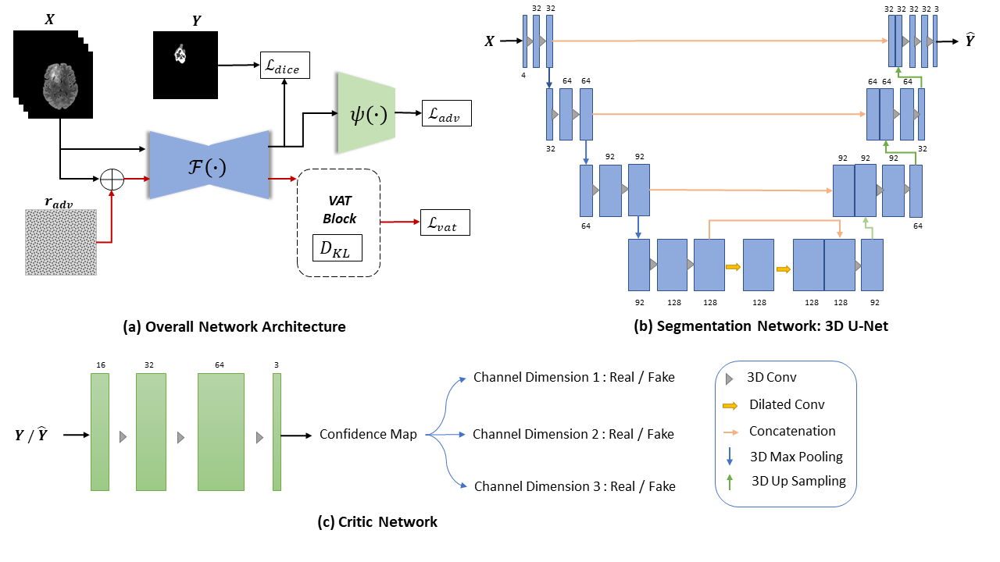
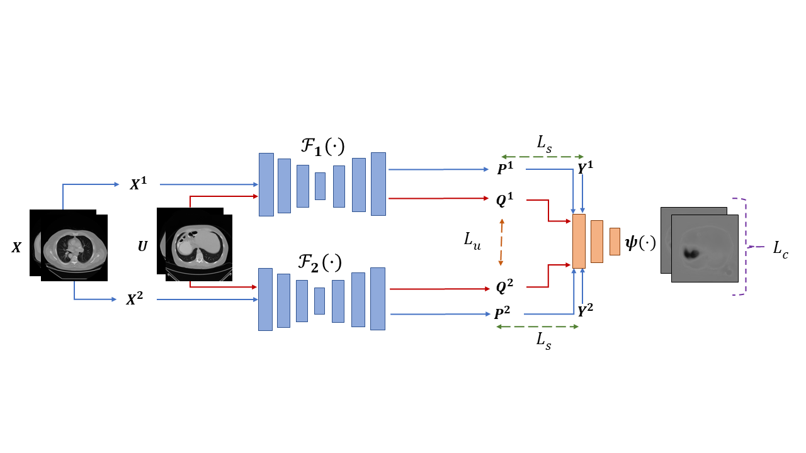
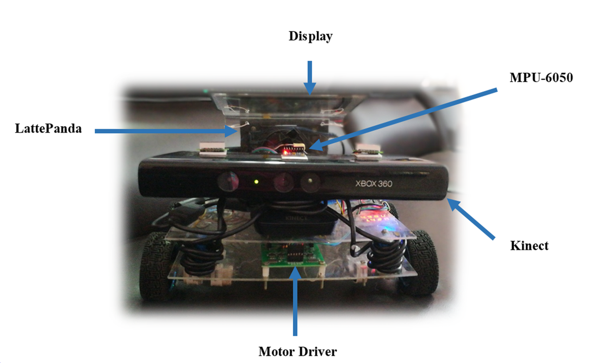

Himashi PeirisPh.D. CandidateAffiliation: Faculty of Engineering, Monash UniversityCurrent Address: Clayton, VIC 3168, Australia Email: edirisinghe.peiris@monash.edu / himashi.ama92@gmail.com Research Interests: Deep Learning, Computer Vision, Medical Imaging, Robotics Google Scholar • Research Gate • LinkedIn • GitHub • ORCID |
Biography
Hello! I am Himashi, a Ph.D. scholar in Engineering at Monash University, Australia, studying artificial intelligence and computer vision under the supervision of A/Prof. Mehrtash Harandi, Prof. Gary Egan, A/Prof. Zhaolin Chen and Dr. Munawar Hayat. My research interests include Medical Image Segmentation, Semi-supervised learning, and Medical Image reconstruction. I completed Bachelor of Science (Honours) in Information Technology from the University of Moratuwa, Sri Lanka, in 2017. I have three and half years of industry experience in Software engineering. I worked as a full-stack software engineer in Pearson, the world's leading education-based company, before joining Monash University as a Ph.D. Scholar.- Education
- 2020.03-Present • Ph.D. Candidate • Supervisors: A/Prof. Mehrtash Harandi (Main), Prof. Gary Egan, A/Prof. Zhaolin Chen and Dr. Munawar Hayat.
- 2013.05-2017.07 • First Class Honours in B.Sc. (IT) Degree
University of Moratuwa, Sri Lanka
- Work Experience
- 2020.07-Present • Sessional Teaching Associate
Departments of Electrical Computer Systems Engineering, Faculty of Engineering, Monash University, Australia
- 2019.04-2019.12 • Senior Software Engineer
Pearson, Sri Lanka
- 2018.04-2019.03 • Software Engineer
Pearson, Sri Lanka
- 2017.06-2018.03 • Associate Software Engineer
Pearson, Sri Lanka
- 2016.04-2017.03 • Trainee Software Engineer
Pearson, Sri Lanka
Departments of Electrical Computer Systems Engineering, Faculty of Engineering, Monash University, Australia
News
- Our recent work has been accepted in Nature Machine Intelligence. Await for the online publication!
Research

Hybrid Window Attention Based Transformer Architecture for Brain Tumor Segmentation.
Accepted in Brainlesion: Glioma, Multiple Sclerosis, Stroke and Traumatic Brain Injuries - BrainLes 2022
[Code]
[Pre-print]

VT-UNet: A Robust Volumetric Transformer for Accurate 3D Tumor Segmentation.
Published in Medical Image Computing and Computer Assisted Intervention – MICCAI 2022
[Paper]
[Code]
[Pre-print]
[Video]

Reciprocal Adversarial Learning for Brain Tumor Segmentation.
Published in Brainlesion: Glioma, Multiple Sclerosis, Stroke and Traumatic Brain Injuries - BrainLes 2021
[Paper]
[Code]
[Pre-print]

Duo-SegNet: Adversarial Dual-Views for Semi-supervised Medical Image Segmentation.
Published in Medical Image Computing and Computer Assisted Intervention – MICCAI 2021
[Paper]
[Code]
[Pre-print]
[Video]

Alternative Platform for Vision based Robot Navigation.
Published in International Journal Of Engineering & Technology – IJET 2018
[Paper]
[Video 1]
[Video 2]
[Video 3]
Teaching
- ENG5001-ENG6001 - Advanced engineering data analysis - S1 2021, S1 2022, S1 2023 ENG5001-ENG6001 consists of a review of probabilistic foundations for data analysis including probability, random variables, expectation, distribution functions, important probability distributions, central limit theorem, random vectors, conditional distributions and random processes. The course focusing in particular on assessing problems from an engineering perspective and deliberate on the relevant contextual factors by combining and applying sophisticated data analysis methods and decision-making skills to analyse industrial scenarios and make recommendations that support business growth and development.
- ECE4179-ECE5179-ECE6179 - Neural networks and deep learning - S2 2020, S2 2021, S1 2022 Head teaching assistant (Labs: S2 2021, S1 2022). ECE4179-ECE5179-ECE6179 conducts a deep dive into deep learning and introduces fundamentals of deep learning and how it can solve problems in many areas, such as image classification, filter design and natural language processing. The course covers foundations of neural networks (MLPs,CNNs), Optimization, Back propagation etc.
- ECE4076-ECE5176 - Computer vision - S1 2022, S1 2023 Head teaching assistant (Labs). ECE4076-ECE5176 course aims to develop an understanding of methods for extracting useful information (eg 3-D structure; object size, motion, shape, location and identity, etc) from images.
Peer Review
- Paper reviewer DICTA, Neurips, IEEE TMI
Work
As a Full stack Software Engineer at Pearson, I worked with team of software engineers to design and develop three versatile projects.- Contributed to Homebase Portal Project which is used for creating courses, launching courses and creating student enrollments. Developed front-end components using Angular.js and Node.js, implementing responsive design and accessibility best practices. Created and maintained RESTful APIs using Java, Springboot, Maven. Played a key role in the migration of data centers to AWS. I was specifically responsible for cost optimization during the migration. I implemented various cost optimization strategies, including rightsizing instances, utilizing reserved instances, and using spot instances. By implementing these strategies, I was able to reduce monthly AWS costs by 30% by implementing cost optimization strategies such as utilization monitoring and cost tagging. Designed and maintained sever level scripts and setting up AWS infrastructure. Participated in code reviews, providing feedback on code quality, security, and maintainability. Mentored junior developers, providing guidance on coding best practices, architecture, and software development processes. Technologies used - Java, Oracle MySql, spring boot, Angular.js, Node.js, cloudformation, redis, AWS.
- Contributed to Early Alerts Analytics Project for MyLabs, where MyLabs is an early alert program which is designed to identify college students who are having academic difficulties and connect them with instructors. Developed Analytics Engine module using Spark and Scala. The module is configured to run on a daily basis, reading data from an S3 bucket and writing it to a MySQL database. Developed Data service module using RESTful APIs and User to Course mapping API endpoint. Implemented authentication and authorization using Access tokens. Technologies used - Spark, Scala, Oracle MySQL, AWS, Java, Maven, Jersey, JUnit, Mockito, Power mock.
- Contributed to Pearson Writer Project, which is a revolutionary digital tool for writers at all levels. Pearson Writer Analytics Project provides service for instructors to view student activities. Created Visualization module and front end. Maintained RESTful APIs using Node.js and Express.js. Collaborated with UX designers to refine user experience. Technologies used - Angular.js, Node.js, Express.js, c3.js and other front-end technologies.
Awards & Achievements
- [1] 2020-Present • Monash Research Scholarship and Faculty of Engineering International Postgraduate Research Scholarship (FEIPRS)
- [2] 2020-Present • Monash Departmental Scholarship Top-up
- [3] 2016-2017 • Was listed in Dean list during undergraduate studies.
Hobbies
I love to spend my leisure time – sketching/painting and getting creative with art materials. I’ve always loved experimenting with art materials since I was a kid, and that kid still exists in me. Besides that, I love watching anime (Naruto, my all-time favourite anime series and My Neighbor Totoro, best anime movie) and sightseeing.